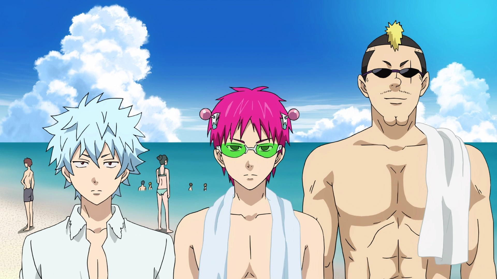
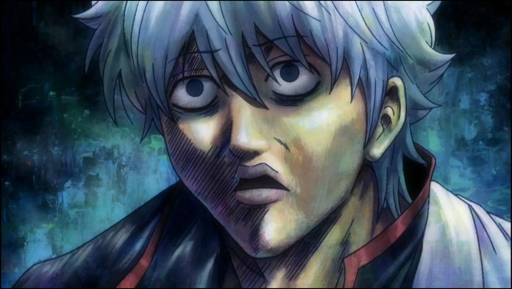
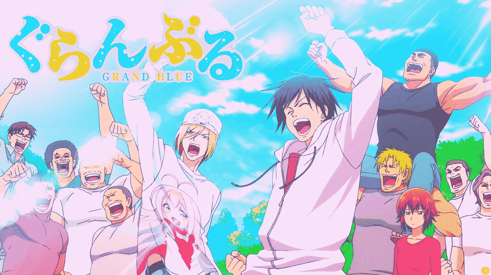
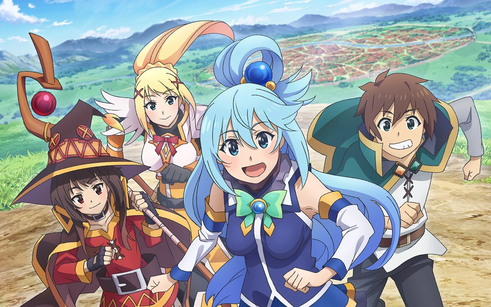
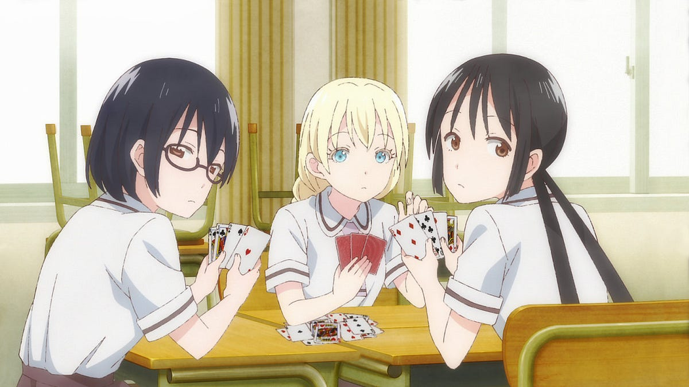
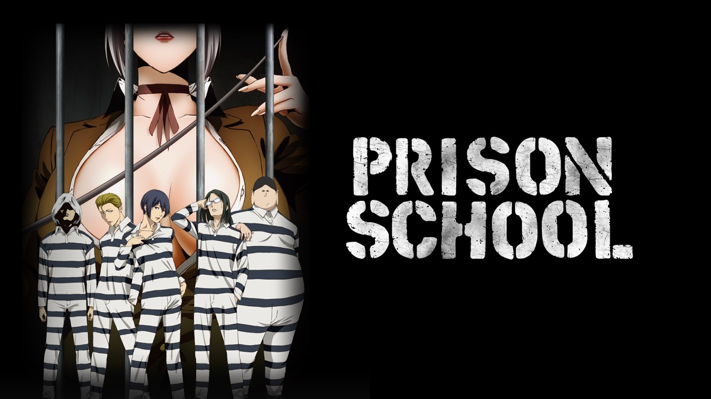
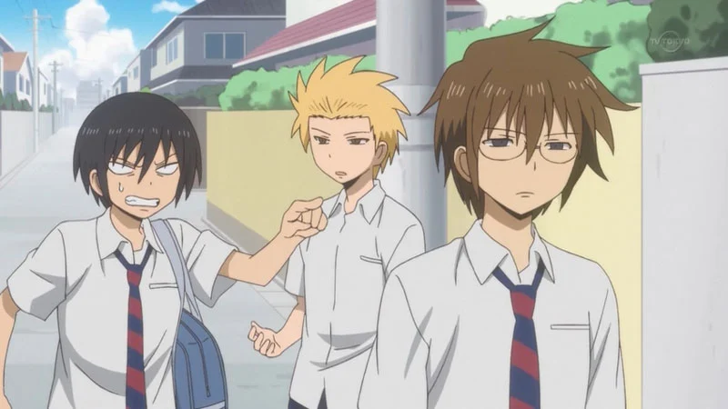
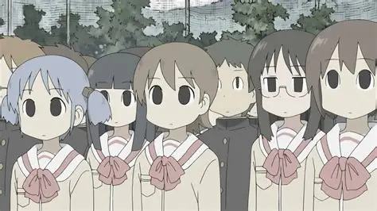
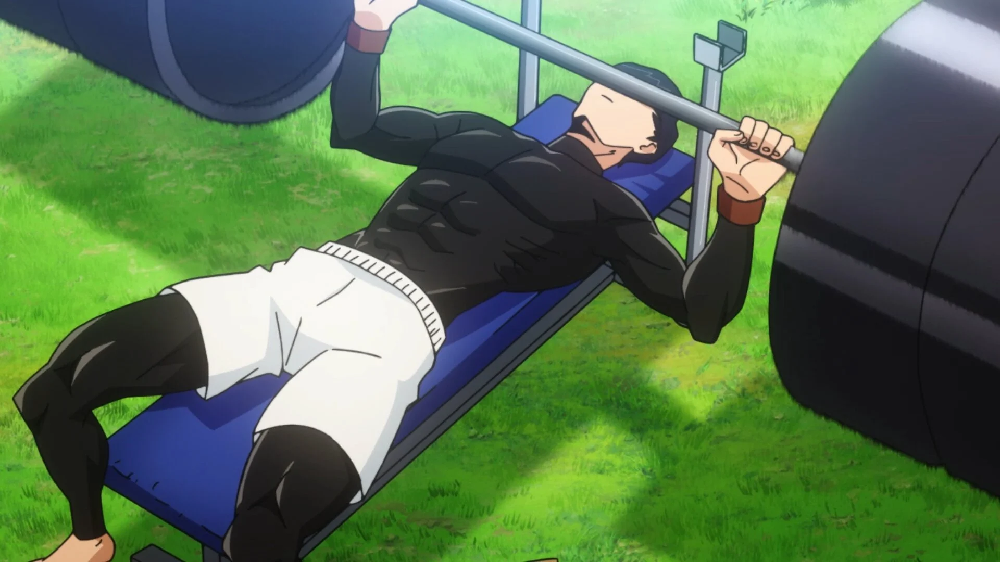
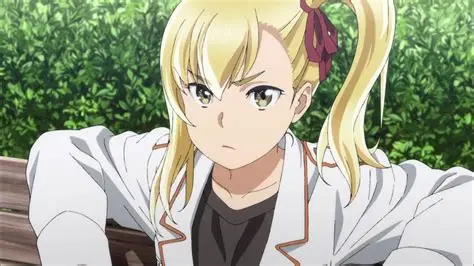

SMASH Senpai
Top 10 Comedy Anime That Are Actually Funny
Let’s be honest — not all comedy anime are funny. Some rely on forced reactions, awkward fan service, or jokes that die the moment they’re delivered. Real comedy is rare. And when an anime gets it right, it becomes unforgettable.
Truly funny anime don’t beg for laughs. They embrace chaos. Timing. Absurdity. Characters react naturally, punchlines land unexpectedly, and the humor feels effortless rather than desperate.
The best comedy anime understand one thing — silence can be funnier than screaming, deadpan reactions beat exaggerated faces, and commitment to the joke matters more than animation budget.
Whether it’s psychic protagonists who hate attention, college students destroying their own lives for laughs, or parody worlds that refuse to take themselves seriously, these anime consistently deliver genuine entertainment.
This list ranks the Top 10 Comedy Anime That Are Actually Funny — no cringe, no forced humor, just anime that can make you laugh out loud even on a bad day.
Sponsored
#1 The Disastrous Life of Saiki K.
The Disastrous Life of Saiki K. is proof that comedy doesn’t need loud characters or forced jokes to be hilarious. The entire humor of the series is built around contrast — a protagonist with godlike psychic abilities trapped in the most annoying social environment imaginable. Kusuo Saiki can read minds, alter reality, and erase memories, yet all he wants is a normal, quiet life.
What makes Saiki K genuinely funny is restraint. Saiki never reacts the way a typical anime character would. While chaos erupts around him, he remains emotionally flat, sarcastic, and internally exhausted. The comedy comes from watching him silently clean up disasters caused by the loud, delusional, and painfully confident people around him.
The supporting cast is intentionally unbearable. Every character embodies a different flavor of absurdity — from the delusional chuunibyou, to the self-proclaimed alpha male, to the dangerously clueless optimist. Instead of overpowering them directly, Saiki manipulates reality in subtle ways just to preserve his own peace.
Saiki K. works because it understands timing. Jokes aren’t dragged out. Punchlines are delivered quickly, often through inner monologue or visual irony. The anime never begs for laughter — it trusts the audience to catch the joke. That confidence is why Saiki K. is considered one of the funniest anime ever made.
- Episode count: 50+
- Genre: Comedy, Supernatural, Slice of Life
- Known for: Deadpan humor and psychic chaos
- Core theme: Absolute power doesn’t mean happiness

play anime smash or pass here (not sponsored)
SMASH SENPAI – Smash or Pass#2 Gintama
Gintama is not just a comedy anime — it is controlled chaos. The series thrives on parody, self-awareness, and complete disrespect for rules, genres, and even its own animation budget. Set in an alternate Edo period invaded by aliens, the premise is intentionally ridiculous — and the anime fully commits to it.
What makes Gintama actually funny is fearlessness. No topic is off-limits. It mocks shonen tropes, anime studios, censorship laws, popular franchises, and even the audience itself. Episodes frequently break the fourth wall, acknowledge production issues, or roast the characters for being irrelevant.
Gintoki Sakata is the heart of the chaos. Lazy, sarcastic, and morally flexible, he reacts to absurd situations with blunt honesty. Instead of heroic speeches, he delivers cynical observations and brutal sarcasm. The supporting cast amplifies the insanity, turning even simple conversations into complete breakdowns.
Despite its insanity, Gintama understands comedy structure. Jokes escalate naturally, silence is used effectively, and absurdity is layered rather than random. The anime’s willingness to look stupid on purpose is exactly what makes it brilliant. When Gintama is funny, it is laugh-out-loud, uncontrollable funny — the kind that catches you off guard.
- Episode count: 350+
- Genre: Comedy, Action, Parody
- Known for: Fourth-wall breaks and meta humor
- Core theme: Nothing is sacred
Sponsored
#3 Grand Blue
Grand Blue is one of the rare comedy anime that makes people laugh before the dialogue even starts. The show is built on extreme facial expressions, exaggerated reactions, and the pure chaos of college life taken to absurd levels. While it presents itself as a diving anime, diving is rarely the focus — reckless stupidity is.
The humor in Grand Blue is unapologetically aggressive. Characters scream, insult each other, and spiral into disaster within minutes. Social situations escalate instantly, turning normal conversations into full-scale breakdowns. Alcohol-fueled stupidity plays a major role, but the comedy works because of timing, not shock value alone.
Iori Kitahara is constantly dragged into insanity by people who treat chaos as a lifestyle. His reactions feel genuine, which grounds the absurdity. Instead of trying to outdo the madness, he suffers through it — and that suffering is the joke.
Grand Blue succeeds because it understands excess. It knows exactly when to push a joke too far, and when to cut it off. The animation amplifies expressions to inhuman levels, making even silent moments hilarious. It’s crude, loud, and completely shameless — but never boring. That commitment to chaos is why Grand Blue is considered a modern comedy classic.
- Episode count: 12
- Genre: Comedy, Slice of Life
- Known for: Extreme facial expressions and chaos
- Core theme: College life is pure insanity
#4 Konosuba
Konosuba looks like a standard isekai at first glance, but it quickly reveals itself as one of the most brutally self-aware comedy anime ever made. Instead of heroic power fantasies, Konosuba delivers failure, embarrassment, and absolute chaos as its core comedic engine. Every character is deeply flawed, and that’s exactly what makes the show hilarious.
Kazuma, the main character, is not a brave chosen hero. He’s petty, lazy, sarcastic, and often selfish — a sharp contrast to typical isekai leads. His party members are even worse. Aqua is powerful but useless, Megumin can only cast one spell, and Darkness is actively excited by pain and humiliation. Their incompetence turns every simple quest into a disaster.
What makes Konosuba’s comedy hit so hard is timing and delivery. Jokes are allowed to breathe, reactions are exaggerated without feeling forced, and punchlines often come from silence rather than noise. The anime constantly mocks genre clichés, making it especially appealing to viewers already familiar with isekai tropes.
Konosuba also thrives on replay value. Scenes are packed with visual gags, background humor, and character expressions that become funnier on rewatch. Its blend of parody, chaos, and character-driven comedy has earned it legendary status among anime fans.
- Episode count: 20+ movies
- Genre: Comedy, Fantasy, Isekai
- Known for: Isekai parody and dysfunctional characters
- Core theme: Failure is funnier than success
Sponsored
#5 Asobi Asobase
Asobi Asobase is not a normal comedy anime — it is an ambush. What starts with a cute art style and innocent character designs quickly transforms into one of the most unhinged, aggressive comedy experiences anime has ever produced. The contrast between appearance and content is its deadliest weapon.
The humor in Asobi Asobase is loud, chaotic, and intentionally uncomfortable. Characters scream, distort their faces, and break social norms in ways that feel almost illegal. Jokes escalate without warning, often jumping from harmless games to psychological warfare within seconds.
Unlike traditional comedy anime, Asobi Asobase does not rely on punchlines. It relies on emotional whiplash. Scenes drag out awkward silence, then explode into insanity. The unpredictable pacing keeps viewers constantly off balance, which makes every episode feel fresh and dangerous.
The anime also thrives on anti-humor. Some jokes exist purely to make the audience uncomfortable or confused. This refusal to cater to expectations is exactly why it went viral. Memes, reaction clips, and distorted facial screenshots turned Asobi Asobase into an internet legend.
- Episode count: 12
- Genre: Comedy, Slice of Life, Absurd
- Known for: Unhinged humor and extreme reactions
- Core theme: Cute appearances mean nothing
#6 Prison School
Prison School is one of the most controversial comedy anime ever aired, combining extreme fan service with surprisingly sharp satire. Set in a formerly all-girls academy, the story follows a group of male students who are imprisoned after being caught peeping. What follows is a relentless barrage of humiliation, punishment, and absurdity.
What makes Prison School stand out is commitment. It does not tone itself down or apologize for its excess. Fan service is exaggerated to ridiculous levels, while dramatic tension is treated with absolute seriousness — creating a bizarre but effective contrast.
The anime’s comedy thrives on over-dramatization. Simple situations are framed like life-or-death battles, complete with intense music, slow-motion reactions, and inner monologues that rival action anime. This absurd seriousness turns even mundane scenes into comedy gold.
Beneath the shock value, Prison School also functions as satire. It mocks authority, social hierarchy, and extreme discipline, pushing every concept to the breaking point. While not for everyone, its fearless approach to humor made it one of the most talked-about anime of its time.
- Episode count: 12 + OVA
- Genre: Comedy, Ecchi, Satire
- Known for: Extreme fan service and dramatic comedy
- Core theme: Humiliation taken to absurd extremes
Sponsored
#7 Daily Lives of High School Boys
Daily Lives of High School Boys is one of the most relatable comedy anime ever made, taking ordinary school life and turning it into pure comedic gold. There are no supernatural powers, no dramatic story arcs, and no over-the-top fan service. Instead, the humor comes from painfully realistic teenage stupidity.
The anime follows a group of high school boys who constantly overthink simple situations. Whether they are imagining dramatic encounters with girls, role-playing fantasy scenarios, or arguing about meaningless topics, their conversations feel uncannily real. Every joke lands because it mirrors thoughts most people had at that age but were too embarrassed to say out loud.
What makes the comedy so effective is timing. Scenes often build slowly, letting awkward pauses do the work, before delivering understated punchlines. The anime avoids forced jokes, allowing natural dialogue and situational humor to carry episodes.
Daily Lives of High School Boys resonates because it captures youth perfectly. It doesn’t exaggerate reality — it exposes it. That grounded approach makes the comedy timeless and endlessly rewatchable.
- Episode count: 12
- Genre: Comedy, Slice of Life
- Known for: Relatable humor and realistic dialogue
- Core theme: Ordinary moments are the funniest
#8 Nichijou
Nichijou takes the concept of “ordinary life” and completely destroys it. The anime presents everyday situations but escalates them into absurd, reality-breaking spectacles. What should be minor inconveniences are treated with the intensity of action anime battles.
A simple argument, a dropped object, or a misunderstanding can turn into explosions, slow-motion standoffs, and exaggerated emotional breakdowns. This extreme escalation is what defines Nichijou’s humor. Nothing is too small to be blown out of proportion.
The animation plays a massive role in the comedy. Facial expressions stretch beyond logic, movements are fluid and aggressive, and reactions feel almost violent. The effort put into animating jokes makes even silent moments hilarious.
Nichijou doesn’t explain its humor — it commits to it. The anime trusts viewers to either laugh or be confused, never stopping to justify itself. This fearless absurdity has earned it cult-classic status and endless meme popularity.
- Episode count: 26
- Genre: Comedy, Slice of Life, Absurd
- Known for: Over-animated everyday moments
- Core theme: Ordinary life taken to extremes
#9 Mashle: Magic and Muscles
Mashle: Magic and Muscles is a comedy built on one brilliant joke: a world where magic defines everything, and the main character has none. Instead of spells, Mash relies purely on absurd physical strength, turning every magical challenge into a slapstick beatdown.
The anime parodies magic-school tropes mercilessly. Elaborate spells are countered with punches, magical barriers are shattered with raw strength, and elite wizards are defeated through sheer stupidity and muscle. The contrast between the serious world and Mash’s deadpan personality is where most of the comedy comes from.
Mash himself rarely reacts emotionally, which makes the chaos around him even funnier. While others panic, scream, or monologue, he calmly lifts weights, eats cream puffs, and accidentally humiliates his opponents.
Mashle succeeds because it understands parody. It respects the genre while relentlessly mocking it. Fans of action anime and comedy alike find themselves laughing at how effortlessly Mash breaks the rules.
- Episode count: 24+
- Genre: Comedy, Action, Fantasy
- Known for: Magic vs raw strength parody
- Core theme: Muscles beat magic
#10 Hinamatsuri
Hinamatsuri blends comedy and emotion in a way few anime manage. At its core, it’s about a yakuza member suddenly becoming the caretaker of a psychic girl. The setup sounds absurd, and it is — but the humor is surprisingly grounded.
The anime excels at deadpan comedy. Hina’s emotionless reactions to chaos contrast sharply with the adults desperately trying to manage her powers. Psychic abilities are treated as inconveniences rather than miracles, which flips expectations in hilarious ways.
What truly elevates Hinamatsuri is its emotional depth. Beneath the jokes are stories about loneliness, responsibility, and found family. Episodes often transition seamlessly from laughter to quiet, heartfelt moments.
This balance is why Hinamatsuri leaves a lasting impact. It doesn’t rely on constant jokes to stay engaging. Instead, it builds attachment to characters, making both the humor and emotional beats hit harder.
- Episode count: 12
- Genre: Comedy, Slice of Life, Supernatural
- Known for: Emotional comedy balance
- Core theme: Family can come from anywhere
Play Smash or Pass on SMASH Senpai.
 PLAY SMASH OR PASS
PLAY SMASH OR PASS